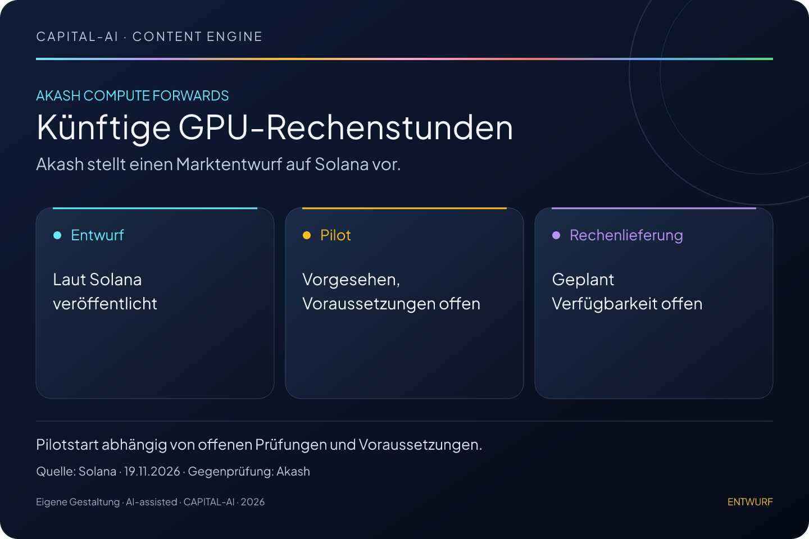

CAPITAL-AI · Redaktioneller Entwurf
Akash stellt Entwurf für künftige GPU-Rechenstunden vor
Die Solana Foundation berichtet, dass Akash einen Entwurf für ein Orderbuch künftiger GPU-Rechenstunden auf Solana veröffentlicht hat. Ein Pilot und erste Rechenlieferungen sind angekündigt.

Eigene AI-assistierte Grafik · CAPITAL-AI · LicenseRef-CapitalAI-Owned · Grafiknutzung im autorisierten CAPITAL-AI-Kontext.Der Entwurf verbindet Beschaffung von KI-Rechenleistung und Abwicklungsregeln. Allgemeine Verfügbarkeit und tatsächliche Lieferungen sind gesondert nachzuweisen.
Quelle: Solana Foundation · 19.11.2026